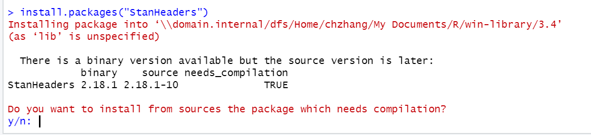

12 FAQ
In this section, we provide answers to questions that students of previous cohorts encountered. We grouped the answers by topic and hope that you will find the answers useful.
12.1 Common error messages

A general note on error messages
We usually load data into a data.frame in our R Session (e.g., from a CSV file using data <- read.csv("file.csv")). It is important to note that this data.frame is not the original data file, but just a copy of the file that is stored on the hard drive. This means that any changes we make to the data.frame are not persistent/permanent and are not written to the original file (unless it is overwritten explicitly by using e.g., write.csv(data, "file.csv"), which we usually don’t do). Therefore, it is important to write all commands in an R/Rmd file such that we can re-run the analysis the next time we open R and reproduce the results. This also means that if you cannot solve an issue using the suggested solutions to specific error messages mentioned on this page, it is completely safe to restart R or delete variables from the Global Environment. You just have to re-run our code to get the variables and results back. Therefore, your code files should always be fully reproducible using only the R/Rmd and data files. In addition your R/Rmd files should run linearly from the first to the last line and should not depend on “jumping” back and forth. The files that you obtain from us from this course are examples of reproducible files and in case you a stuck with a problem at a certain point, you can just save the code file and run it again up until the point where you were before the error occurred.
This means that a general procedure for dealing with errors that cannot be solved in any other way would be as follows:
- Save your code file and restart your R Session (Session -> Restart R in RStudio)
- Go back to the beginning of your code file and run it line by line (
Ctrl-Enterin RStudio) - If your error persists check the affected line for typos/differences in spelling.
- If the error occurs in a function make sure you are passing the arguments correctly (see help file for the function using
?FUNCTIONNAME) - Look at all the variables in your Global Environment and make sure they are in the format you expect them to be (e.g., if a file you expect to be a data frame is really a specified as a data frame).
- See the list of common error messages for more explanations below
- Nothing helped: Ask in the forum. If possible with a screenshot that explains your issue, or - better yet - a minimal reproducible example.
In the following capitalized words are stand-ins for specific calls/symbols/functions.
Error in file(file, “rt”): cannot open the connection
This error message sometimes has an additional warning:
In addition: Warning message:
In file(file, "rt") :
cannot open file 'FILE': No such file or directoryThis error occurs either when a file name is not spelled correctly or the file is not in the directory where R is looking for it. You can check the directory R is looking at by executing the function getwd(). To set a new directory use setwd(DIRECTORY). Note that you cannot just paste a path from Windows Explorer to setwd since the directory has to be in the format:
setwd("C:/Users/USERNAME/Documents")
but Windows Explorer uses
C:\Users\USERNAME\Documents (i.e., change \ to / in R when specifying the path)
Alternatively, you can set the directory in RStudio under Session -> Set Working Directory. Here “To Source File Location” will set the directory to wherever the currently open R file is stored.
Error: unexpected ‘SYMBOL’ in “CALL”
Usually the unexpectes SYMBOL message is due to parentheses not being matched but it could also be any other symbol that R cannot interpret in the given context. Please check the line in which the error occurred for typos (especially too many/ too few symbols). Some common examples are:
## Error: <text>:1:15: Unerwartete(s) ')'
## 1: print("hello"))
## ^There is one too many closing parenthesis here.
## Error: <text>:1:4: Unerwartete(s) '/'
## 1: 1 +/
## ^The “/” symbol may not follow the “+” symbol without any additional objects.
## Error: <text>:1:3: unerwartete numerische Konstante
## 1: 1 2
## ^The sequence with a space between numbers is not recognized by R.
## Error: <text>:2:2: unerwartetes Symbol
## 1: x <- 3
## 2: 2x
## ^If you wanted to multiply x by 2 you would need to a the "*" symbol, as the following example shows.
## [1] 6Error in CALL : object of type ‘closure’ is not subsettable
This error occurs usually when one tries to subset a function (either with fun$element or fun[1] where fun is a function). Check your variable (especially data.frames) names for typos! This happens when you run the following code, for example, since mean is a function:
## Error in mean$value: Objekt des Typs 'closure' ist nicht indizierbarinstead of (i.e., correcting for the missing “s” to identify the data frame by its name)
## [1] 1 2 3or we give variables the same name as a function (which should generally be avoided) but have not created that variable yet:
## Error in object[[i]]: Objekt des Typs 'closure' ist nicht indizierbarMake sure all the relevant code is run first:
dat <- data.frame(value = c(1,2,3), group = c("a", "b", "b"))
aov <- aov(value~group, dat)
summary(aov)[[1]]Error in CALL_WITH_$: $ operator is invalid for atomic vectors
This error occurs when we try to subset a vector using the $ operator. Usually this occurs when we think an object is a data.frame with the variable in it but it is really a vector.
## Error in x$a: $ operator is invalid for atomic vectors## [1] 1 2 3Note that this error can also occur as part of function calls when some variables are NA:
## Error in mean.default(xdf$a, xdf$group): 'trim' muss nummerisch sein und Länge 1 habenWhen you get this error make sure your data is in the format you expect it to be (e.g., using the str function). And that missing values (i.e., NA) are handles appropriately.
## 'data.frame': 3 obs. of 2 variables:
## $ a : int 1 2 3
## $ group: logi NA NA NAError in CALL: object ‘NAME’ not found
This error occurs whenever you pass a variable name that is not assigned to some function. The error is for example:
Error in plot(x): object 'x' not found
If you just enter a variable name that is not assigned it looks like this:
Error: object 'NAME' not found
Check your code for typos and make sure you have run all the relevant lines of code before the one in which the error occurs!
Error in CALL: could not find function “FUNCTION”
This error occurs if a function name is either misspelled or some packages have not been loaded into the current session (library(PACKAGENAME)). You have to re-load all packages every time you restart R. For example if you did not load the ggplot2 library but try to use the ggplot function:
## Error in detach(package:ggplot2): ungültiges 'name'Argument## Error in ggplot(data): konnte Funktion "ggplot" nicht findenIf you are not sure which package provides a given function, try running:
??FUNCTION
with two ?? this will search the help files of all installed packages for FUNCTION (e.g., ??ggplot).
Error in CALL: incorrect number of dimension
This error occurs when subsetting an object with the wrong number of dimension. For example if we have a vector x and try to get an element in the second dimension:
## Error in x[1, 1]: falsche Anzahl von Dimensionen## [1] 1Note that data.frames have two dimensions (each variable is a column, each observation a row) even if there is only one variable:
## [1] 1For multidimensional objects you can always check the size of each dimension using the dim function:
## [1] 3 1For vectors dim will return NULL.
12.2 Installation of R packages
What are the different ways to install R packages?
There are multiple ways to install a package:
- Enter
install.packages("PACKAGENAME")in the console (attention: the name of the package needs to be in quotation marks) - Go to the “Packages” pane in RStudio (lower right by default), then click on “Install”, then enter the package name
- Using the two methods above would load the package from the official R server, the so-called Comprehensive R Archive Network (CRAN). There may be instances when you would like to install packages from other sources. This could be the case, for example, when a package is not available for the version of R that you are using. Sometimes an new version of R is released and some packages may require updating to be compatible with this new version. The updating process on the official server may take some time and usually the most recent version of a package are available from other sources, such as GitHub. Using the
devtoolspackage, you can install packages from GitHub directly:devtools::install_github(repo = "USERNAME/PACKAGENAME"). Of course, this requires thedevtoolspackage to be installed already; i.e., you need to runinstall.packages("devtools")first, if thedevtoolspackage is not installed yet.
I cannot install packages due to “Error in contrib.url(repos,”source“)” or “Warning message: package ‘PACKAGENAME’ is not available for this version of R”
- Try adding the
repoargument to theinstall.packagescommand as in the following example:
- Try to install the package from GitHub directly using the
devtoolspackage.
For example to get the devtools package and install the ggstatsplot package from the GitHub-user IndrajeetPatil run the following code:
install.packages("devtools")
devtools::install_github(
repo = "IndrajeetPatil/ggstatsplot", # package path on GitHub ("username/packagename")
dependencies = TRUE, # installs packages which ggstatsplot depends on
upgrade_dependencies = TRUE # updates any out of date dependencies
)- In case you are using
knitting process of a R Markdown file, you should not install any packages from within the markdown file. Instead, install the packages first using a plain R script file and then load the package within the markdown file before clickingknitto compile the document.
Some libraries with graphical output (e.g., summarytools, magick) fail to install/load properly on MacOS
Some libraries require the XQuartz window system for MacOS. After installing XQuartz please restart your computer. If you get an error message including a message about the magick package try install.packages("magick") and if that fails devtools::install_github("ropensci/magick", dependencies = TRUE) might help.
I cannot install some packages on MacOS
- When asked whether R should try to install a package from sources a package which needs compilation, enter “no” or “n”.

- If this doesn’t solve the issue, try installing the free XCode package from the Apple Appstore, open a Terminal and enter “xcode-select –install”. After that try to install the package again (answering “yes” to the question above).
12.3 Issues with statistics and data
Why does a multi-item scale lead to increased reliability?
“When combining several items into a scale, random error that is inherent in every item is averaged out, which leads to increased levels of reliability”. There could, for example, be individual-level differences in the interpretation of certain items. When you have multiple items measuring the same underlying construct, these differences will average out.
Why can demeaning/standardization lead to missing values?
Calculating statistics (e.g., mean, sd) using variables that include NAs will return an NA by default. There are a couple of options to address this problem. The missing values can be deleted from a variable using the na.omit function. Alternatively many functions offer the na.rm argument which will calculate the statistic disregarding NAs. For example, the following will result in NA:
## [1] NAWhile the following disregards the NA values when computing the mean of the numeric vector:
## [1] 2.75Note that the scale function automatically omits missing values when calculating the mean and standard deviation to standardize a variable.
See missings.R for a sample script.
The confidence interval (CI) of the mean seems very small compared to the dispersion of my sample. Can this be correct?
The confidence interval of the mean depends on both the variance of the variable and the the sample size:
\[ \sigma_{\bar x} = \frac{\sigma}{\sqrt{n}} \]
Therefore even if the standard deviation of the data (\(\sigma\)) is large, we can get a narrow CI if we have a relatively large sample size.
See confidenceinterval.R for a simulation study.
12.5 General settings and options
Numbers are formatted weirdly
By default R uses scientific notation for very large and very small numbers. We can control this behavior using options(scipen=...) where larger positive numbers will result in a wider range of values being printed in fixed notation (i.e., all digits) and negative numbers will result in more numbers being printed in scientific notation.
From ?options we get:
scipen: integer. A penalty to be applied when deciding to print numeric values in fixed or exponential notation. Positive values bias towards fixed and negative towards scientific notation: fixed notation will be preferred unless it is more than scipen digits wider.
Scientific notation follows the following rule: \(VeD \Rightarrow V \times 10^D\).
Therefore, options(scipen=-10) would result in:
## [1] 2.937496e+01And options(scipen=10) would result in:
## [1] 29.37496See also scientificnotation.R for some examples.
Note that options(digits=...) also allows you to control the number of digits to be displayed for numeric values:
## [1] 29.374959238412.6 Data visualization/output issues
How can the geom colors in a ggplot be changed?
In general, there are two types of colors that can be changed. The color argument changes the line or border color (e.g., in a bar chart). The fill argument changes the filling color of a plot that has a rectangle-like area (e.g., barplot, histogram, boxplot) that can be filled but does nothing for e.g., line plots.
Colors can be specified either as an argument to the ggplot or geom* call directly as in ggplot(data, aes(x = Genre, y = Freq), color = c("red", "green",...)) or as part of the aesthetics (aes). In the latter case, colors will automatically be assigned and a legend added if a categorical variable is provided as in ggplot(table_plot_rel, aes(x = Genre,y = Freq, fill = Genre)) + geom_col().
This is not to be confused with setting background/text colors as part of a theme. Themes can either be provided by a package (e.g., library(ggthemes)) or created by hand.
See ggplotcolors.R for a sample script.
Why are some histograms displayed differently?
When plotting a histogram, there is an important parameter called binwidth which controls the range over which the number of observations are counted in each bin. If it is set to a too low value, each bin will only have very few observations and we get a large number of bins. If it is set to a value that is too high, we lump many observations together and get very few bins (in the extreme case only one). You may have to play around with different values to find the appropriate binwidth for your plot.
See histogrambins.R for some examples.
Some labels in plots are cut off. How can I extend the plot margins?
If axis labels (e.g. names) are too long, they are cut off by the default margins of R plots. You can set margins manually in ggplot2 as part of the theme settings in the following order: top, right, bottom, left. For example, to add 2cm margin to each side, we can use:
In addition you can try to change the height and width when saving a ggplot (this usually works better):
Within an Rmd document you can set the with and height as part of the code chunk options using e.g., fig.width=10, fig.height=10 (see also here)
12.7 Issues with functions and function arguments
Generally, if you face an issue relating to a particular function, it is a good idea to check the details of a function, by typing ?FUNCTION (e.g., ?mean) and read the help file.
Problems with factor and as.factor
1. Common mistake: some groups are not named in levels and labels \(\Rightarrow\) results in NA for omitted group like in the following example:
## [1] no no no yes no <NA> no yes
## Levels: no yesIn this example, you need to also consider “2” as a factor level to avoid setting the value of this observation to NA:
## [1] no no no yes no maybe no yes
## Levels: no yes maybe2. Common mistake: the code creating the factor is run twice overwriting the original variable \(\Rightarrow\) results in NA for all values like in the following example:
x <- c(0,0,0,1,0,2,0,1)
x <- factor(x, levels = c(0,1,2), labels = c("no","yes","maybe"))
x <- factor(x, levels = c(0,1,2), labels = c("no","yes","maybe"))
x## [1] <NA> <NA> <NA> <NA> <NA> <NA> <NA> <NA>
## Levels: no yes maybeAs can be seen, by running the line of code specifying the factor variable twice, we first specify the factor variable correctly and then incorrectly overwrite this variable again. The second time we run the code, the values are set to NA because R looks from levels of 0,1, and 2 again, but these had already been replaced by the labels when the code was run for the first time. Hence, since there are no elements with the values of 0,1,2 anymore, these values are replaced by missing values.
Note that this is usually a result of “jumping” back and forth in the code. Run your script from the top and make sure you do not create the factor twice. The second time the original levels do not exist anymore and thus all resulting values are missing without warning or error.
Possible remedy: name the factor variable you create differently from the source variable, e.g.,
## [1] no no no yes no maybe no yes
## Levels: no yes maybeIn this case, you can always go back and re-run the code creating the factor variable from its original source if you have overwritten it accidentally. Otherwise you would need to re-run the entire code to get the original formating of the variable back.
3. Common mistake: converting from factor to integer/numeric directly:
Internally factors are stored in increasing integers starting at \(1\) each attached with a label. If we create a factor from an integer variable and then convert it back, this behavior might be surprising.
Possible remedy: convert to character first since this will use the labels as values
See factors.R for examples of each of the mistakes and remedies.
How can I find an explanation of the output of a function?
See the Value section of the help file for the function. You can get the help file by calling:
?FUNCTION
e.g.,
?lm or ?mean
If the function is provided by a package you have to load the package first using the library(...) function.
e.g.,
What does the MARGIN argument do?
Some functions such as apply and prop.table take a MARGIN argument. This argument specifies over which dimension (e.g., rows = 1, columns = 2) a function should be applied. This is especially useful for multidimensional arrays such as matrices.
## [,1] [,2] [,3]
## [1,] 1 4 7
## [2,] 2 5 8
## [3,] 3 6 9e.g. we could get the max of each row with
## [1] 7 8 9and the max of each column with
## [1] 3 6 9See margins.R for more examples.
12.8 Issues with R Markdown
I get an error when knitting to PDF but it works for HTML
Try installing the tinytex library as follows before kniting your document:
I am not sure where R-code, LaTeX math, and text go
In an Rmd document, there are 3 different environments,
1. R-code is enclosed in three ticks followed by {r, chunk-options} where the chunk options can include configuration for printing code and output as well as figures e.g.
## [1] "Hello R!"2. LaTeX math can either be enclosed in single dollar signs $x^2$ \(\Rightarrow x^2\) for in-line math or in double dollar signs to put the math output on its own line
$$
x^2
$$\[ x^2 \]
For aligned multi-line equations we can add \begin{aligned} and \end{aligend}. The equations will be aligend at the & and a line is ended with \\.
$$
\begin{aligned}
x &= 1 \\
y &= 2 \\
z = &3
\end{aligned}
$$\[ \begin{aligned} x &= 1 \\ y &= 2 \\ z = &3 \end{aligned} \]
3. Regular text goes anywhere between those environments
12.9 New questions
Couldn’t find an answer to your question? In this case, you may use the forum on Learn@wu to ask your question. We regularly update this section of the website and will include answers to new questions as they come up.